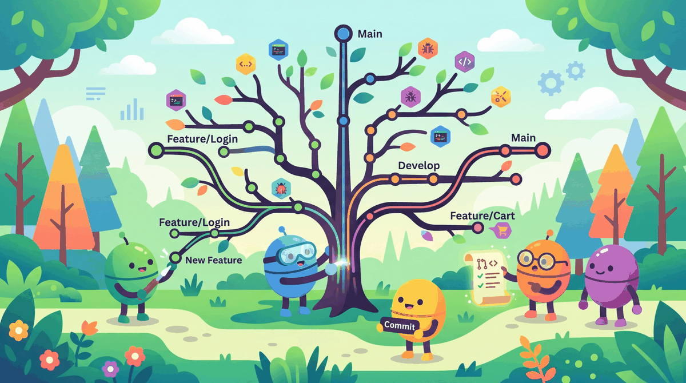

An experiment you cannot reproduce is an anecdote. Version control turns anecdotes into science.
Deploy AI Agent
Machine learning projects have unique version control challenges that standard software development workflows do not address well. Model weights are gigabytes in size. Datasets may be too large for Git. Results depend on random seeds, hardware, and library versions. This appendix covers the tools and practices that bring order to this complexity.
E.1 Git Basics for ML Projects
Git is the foundation of code versioning, but ML projects require special attention to what goes into the repository and what stays out. The single most important configuration for any ML repo is the .gitignore file. Code Fragment E.1 below puts this into practice.
A .gitignore for LLM Work
This snippet provides a .gitignore template tailored for LLM projects, covering model weights, datasets, and environment files.
# Model weights and checkpoints
*.bin
*.safetensors
*.pt
*.pth
*.ckpt
*.gguf
checkpoints/
models/
# Datasets
data/raw/
data/processed/
*.parquet
*.arrow
# Hugging Face cache
.cache/
# Training outputs
runs/
wandb/
mlruns/
outputs/
*.log
# Environment
*.env
.env
__pycache__/
*.pyc
*.egg-info/
venv/
llm-env/
# Jupyter notebook checkpoints
.ipynb_checkpoints/
# OS files
.DS_Store
Thumbs.dbIf you accidentally commit a large model file to Git, simply deleting it in a later commit does not fix the problem; the file remains in Git's history and inflates the repository forever. Use git filter-branch or the BFG Repo Cleaner to remove large files from history. Better yet, set up your .gitignore before your first commit.
Git LFS for Large Files
When you do need to version large files (specific model checkpoints that are part of your deliverable, for instance), Git Large File Storage (LFS) replaces them with lightweight pointers in the repository while storing the actual file contents on a remote server. Code Fragment E.2 below puts this into practice.
# Install Git LFS
git lfs install
# Track specific large file types
git lfs track "*.safetensors"
git lfs track "*.bin"
# The .gitattributes file is created automatically
git add .gitattributes
git commit -m "Configure Git LFS for model files"
# Now large files are handled transparently
git add model.safetensors
git commit -m "Add fine-tuned model checkpoint"Hugging Face Hub uses Git LFS under the hood for all model repositories. When you push a model with model.push_to_hub(), it is automatically stored via LFS.
Branching Strategy for ML
A practical branching strategy for ML projects:
- main: Stable, tested code and configurations. Every merge to main should produce reproducible results.
- experiment/[name]: Each experiment gets its own branch. Include the date or a short description:
experiment/lora-r16-lr2e4. - data/[name]: Branches for data processing pipeline changes.
- feature/[name]: New features in the codebase (new evaluation metrics, new data loaders).
E.2 Data Version Control (DVC)
DVC extends Git to handle large datasets and model files. It works alongside Git: code is tracked by Git, and data and models are tracked by DVC. The two stay in sync through lightweight .dvc pointer files that Git does track. Code Fragment E.3 below puts this into practice.
# Install DVC
pip install dvc dvc-s3 # or dvc-gs for Google Cloud, dvc-azure for Azure
# Initialize DVC in an existing Git repo
dvc init
# Track a large dataset
dvc add data/training_corpus.parquet
# This creates data/training_corpus.parquet.dvc (a small pointer file)
git add data/training_corpus.parquet.dvc data/.gitignore
git commit -m "Track training corpus with DVC"
# Push data to remote storage (e.g., S3 bucket)
dvc remote add -d myremote s3://my-bucket/dvc-store
dvc pushDVC can also define reproducible pipelines with dvc.yaml. Each stage specifies its dependencies (input files, scripts) and outputs. Running dvc repro re-executes only the stages whose dependencies have changed. This is invaluable for ML workflows where you need to reprocess data, retrain, and re-evaluate in a consistent order. Code Fragment E.4 below puts this into practice.
# Example dvc.yaml pipeline
stages:
preprocess:
cmd: python scripts/preprocess.py
deps:
- data/raw/corpus.jsonl
- scripts/preprocess.py
outs:
- data/processed/train.jsonl
- data/processed/eval.jsonl
train:
cmd: python scripts/train.py --config configs/lora.yaml
deps:
- data/processed/train.jsonl
- scripts/train.py
- configs/lora.yaml
outs:
- models/finetuned/
metrics:
- metrics/train_results.json:
cache: falseE.3 Experiment Tracking
When you run dozens of training experiments with different hyperparameters, keeping track of what you tried, what worked, and what failed becomes critical. Experiment tracking tools log metrics, hyperparameters, and artifacts automatically.
Weights & Biases (W&B)
W&B is the most popular experiment tracker in the LLM community. It integrates directly with the Hugging Face Trainer. Code Fragment E.5 below puts this into practice.
# Experiment tracking setup
# Key operations: loss calculation, training loop, structured logging
import wandb
from transformers import TrainingArguments, Trainer
# Initialize a W&B run
wandb.init(project="llm-finetuning", name="lora-r16-lr2e4")
training_args = TrainingArguments(
output_dir="./output",
report_to="wandb", # enables automatic logging
logging_steps=10,
num_train_epochs=3,
learning_rate=2e-4,
)
# The Trainer automatically logs loss, learning rate, etc. to W&B
trainer = Trainer(
model=model,
args=training_args,
train_dataset=train_data,
eval_dataset=eval_data,
)
trainer.train()
wandb.finish()MLflow
MLflow is an open-source alternative that can be self-hosted. It is popular in enterprise settings where data must stay on-premise. Code Fragment E.6 below puts this into practice.
# Experiment tracking setup
# Key operations: loss calculation, training loop, monitoring and metrics
import mlflow
mlflow.set_experiment("llm-finetuning")
with mlflow.start_run(run_name="lora-r16-lr2e4"):
mlflow.log_params({
"model": "llama-3.1-8b",
"lora_r": 16,
"learning_rate": 2e-4,
"epochs": 3,
})
# ... training code ...
mlflow.log_metrics({
"eval_loss": 0.42,
"eval_accuracy": 0.87,
})
# Log the model as an artifact
mlflow.log_artifact("./output/adapter_model.safetensors")| Feature | W&B | MLflow |
|---|---|---|
| Hosting | Cloud (free tier) or self-hosted | Self-hosted or Databricks |
| HF Trainer integration | Built-in | Via callback |
| Visualization | Excellent web dashboard | Good local UI |
| Team collaboration | Strong (shared workspaces) | Basic (model registry) |
| Cost | Free for individuals, paid for teams | Free and open source |
E.4 Reproducibility Best Practices
Reproducibility is the ability for someone else (or your future self) to re-run your experiment and get the same results. In ML, achieving perfect reproducibility is difficult due to floating-point non-determinism on GPUs, but you can get very close. Code Fragment E.7 below puts this into practice.
The Reproducibility Checklist
- Pin all dependencies. Use
pip freeze > requirements.txtorconda env export > environment.yml. Record the exact PyTorch, Transformers, and CUDA versions. - Set random seeds. Fix seeds for Python, NumPy, and PyTorch at the start of every script:
# PyTorch implementation # See inline comments for step-by-step details. import random, numpy as np, torch random.seed(42) np.random.seed(42) torch.manual_seed(42) torch.cuda.manual_seed_all(42)Code Fragment E.7: This snippet demonstrates this approach using PyTorch, NumPy. Study the implementation details to understand how each component contributes to the overall computation. This pattern is common in production PyTorch code and forms a building block for larger architectures. - Version your data. Use DVC or record dataset checksums (SHA-256 hashes) in your experiment logs.
- Log everything. Hyperparameters, hardware info, git commit hash, and the exact command used to launch training.
- Use configuration files. Store hyperparameters in YAML or JSON files rather than command-line arguments. Version these files with Git.
- Record hardware info. GPU model, driver version, and CUDA version can all affect results. Log them automatically:
# PyTorch implementation # See inline comments for step-by-step details. import torch config = { "gpu": torch.cuda.get_device_name(0) if torch.cuda.is_available() else "CPU", "cuda_version": torch.version.cuda, "pytorch_version": torch.__version__, }Code Fragment E.8: This snippet demonstrates this approach using PyTorch. Study the implementation details to understand how each component contributes to the overall computation. This pattern is common in production PyTorch code and forms a building block for larger architectures.
A 2022 survey found that only 30% of ML papers included enough information to reproduce their results. The ML community is gradually improving through tools like DVC, W&B, and Hugging Face Model Cards, but the gap between "it works on my machine" and "anyone can verify this" remains wide. Being rigorous about versioning and logging puts you ahead of most practitioners.
Git, DVC, and experiment tracking are not overhead; they are infrastructure. A team that invests in these tools early spends less time debugging "what changed?" and more time making progress. For solo practitioners, these same tools serve as a conversation with your future self: three months from now, you will not remember which learning rate produced that promising result unless you logged it.
Collaboration Toolkit Summary
- Start every ML repo with a thorough
.gitignorethat excludes model weights, datasets, and cache directories. - Use Git LFS for the rare large files that must be versioned, and DVC for datasets and model checkpoints.
- Track experiments with W&B (cloud, great UI) or MLflow (self-hosted, open source).
- Pin dependencies, set random seeds, use config files, and log hardware info for reproducibility.
- Treat collaboration tooling as an investment, not a cost. It compounds over every experiment you run.
What Comes Next
Continue to Appendix F: Glossary of Key Terms for the next reference appendix in this collection.
Official docs covering data versioning, pipelines, and remote storage configuration.
Weights & Biases Documentation
Comprehensive guides for experiment tracking, sweeps, and artifact management.
Open-source platform for experiment tracking, model registry, and deployment.
Pineau, J. et al. (2021). "Improving Reproducibility in Machine Learning Research." JMLR, 22(164), 1-20.
A comprehensive analysis of reproducibility challenges in ML with concrete recommendations for researchers.
Official site for Git LFS with installation instructions and usage guides.